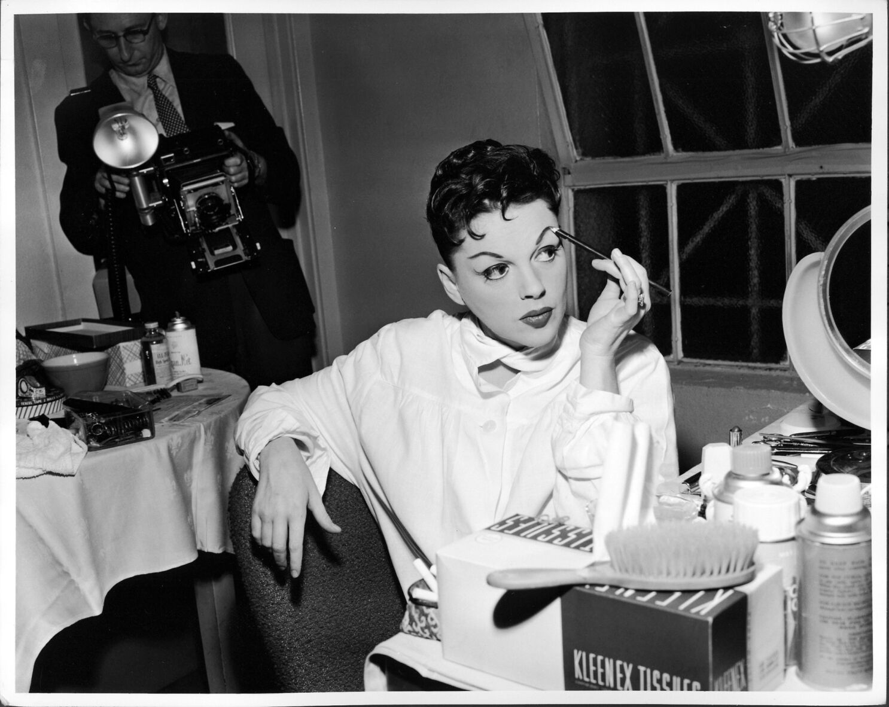

Judy Garland
Judy Garland is the original actor for the movie known as The Wizard of Oz, The Wizard of Oz was also Judy's first movie
Judy's pictures
(This end marks the end of Judy Garland as she died in 1969 due to barbiturate overdose this is belived to have started on the late 1960's. As a comment Dr. Gavin Thurston says this was an accidental event the people compare Judy's acctions saying that what she did was a suicide fun fact Judy started performing at age 2)
By. Max Chacon